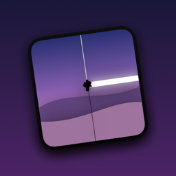

FoldFail Support
How do I use it?
- Open FoldFail and choose when the crack should appear.
- Optionally capture your home screen with the built-in guide, so the crack appears on it.
- Tap Arm, close the phone and lend it to a friend.
- When they unfold it: crunch! Press and hold the screen to reveal the prank.
My friend swiped up and the prank didn’t start
iOS lets anyone leave an app with the swipe-up gesture. To keep your friend in FoldFail, turn on Guided Access (Settings → Accessibility → Guided Access). After arming, triple-click the side button and tap Start. Triple-click again and enter your passcode to end it.
How do I end the prank?
While armed, tap the screen 3 times quickly. After the crack appears, press and hold the screen.
Is my phone really damaged?
No. The crack is just an image drawn by the app. FoldFail never changes your display, settings or data.
Does it work on non-foldable iPhones?
Yes. On regular iPhones the crack appears instantly on touch, after a random delay, or when you come back to the app.
Slovensky
Potrebuješ pomoc? Napíš na apps@maddog.sk. Aby kamarát neodišiel z appky gestom zdola nahor, zapni Asistovaný prístup (Nastavenia → Prístupnosť → Asistovaný prístup) a po nastražení 3× stlač bočné tlačidlo → Spustiť.